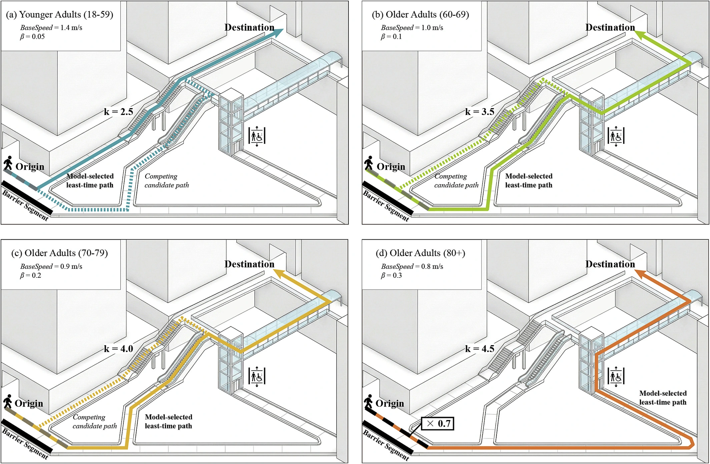

Age-friendly accessibility2026 · Hong Kong
How many minutes make an age-friendly city?
Most daily walking trips by older adults in Hong Kong fall within 5 to 12 minutes, depending on age and destination, rather than a single 15-minute benchmark. The framework combines age-specific thresholds with a hierarchy of everyday needs and a 3D pedestrian network.
Journal of Transport Geography